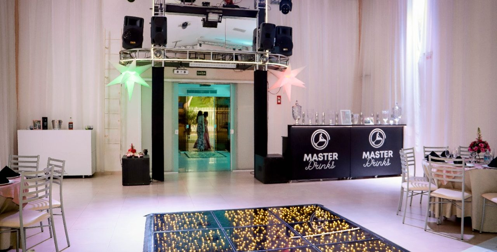
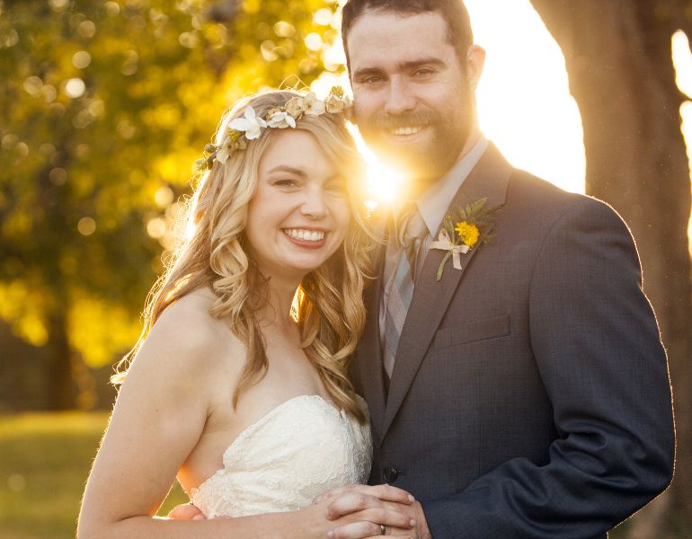

Tecnologia
Som e iluminação em LED profissional, TVs de LED, projetor de alta definição e gerador de luz em standby.
SALÃO DE EVENTOS CURITIBA CELEBRAÇÕES
Um espaço para casamento, 15 anos e formatura — com estrutura para você viver o momento e receber o carinho de seus convidados.
Conteúdo em avaliação. Canais, endereço e condições precisam de confirmação antes da publicação.

A OCASIÃO
Escolha o tipo de celebração para encontrar o ponto de partida da sua conversa.

CasamentoPara dizer sim ao seu jeito ↗ 15 AnosUma noite para celebrar ↗ FormaturaUma conquista para reunir ↗As imagens desta seleção ilustram as ocasiões publicadas; não são apresentadas como registros de eventos realizados no local.
A ESTRUTURA
Uma leitura direta da estrutura e dos recursos apresentados pelo salão.
Som e iluminação em LED profissional, TVs de LED, projetor de alta definição e gerador de luz em standby.
Ambientes climatizados, hall de recepção, sala de atendimento e sala VIP da noiva ou debutante.
Banheiros adaptados para deficientes, fraldário anexo ao banheiro feminino e estacionamento.
O APOIO
A equipe publica suporte desde a ideia até a conclusão, contando com organizadores e gerentes dedicados.
Os serviços publicados precisam ser confirmados quanto a inclusão, disponibilidade e contratação.
UMA REFERÊNCIA
Imagem da galeria oficial usada como referência visual. Configuração, legenda e direitos de uso precisam de aprovação.
O PRÓXIMO PASSO
O caminho de contato permanece em validação. Quando os canais forem confirmados, esta área poderá receber um destino ativo.
Canal em confirmação
[CONFIRM CURRENT PHONE AND WHATSAPP]